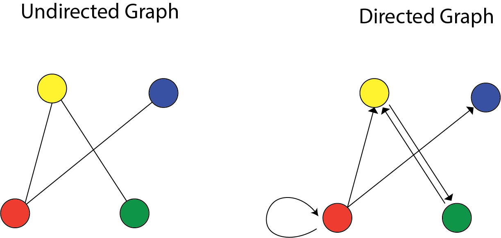
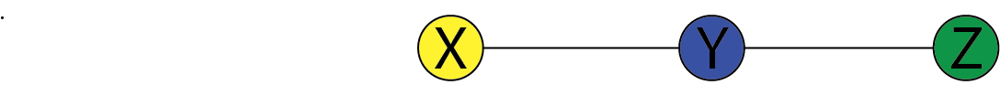
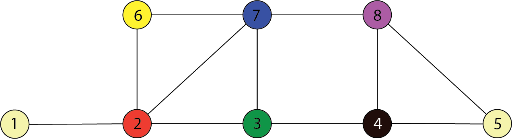
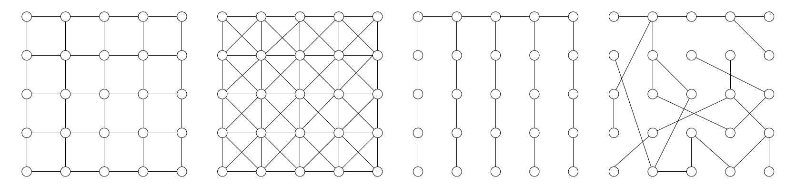
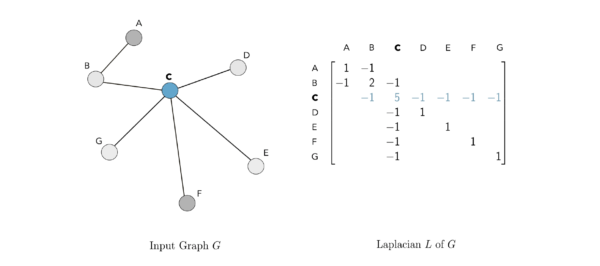

Sparsity and Graphs
Graphs allow us to encode structural assumptions about data. Graphs are the natural language for describing all kinds of problems and data. The graphs discussed in this post will quantify statistical relationships between random variables. In particular, there is a graph associated with any multivariate distribution. There is always a graph associated with random variable $\omega$.
There are two types of graphs: Directed versus Undirected graphs.

A graph $G=(V,E)$ has vertices $V$ and edges $E$. If $X=(X_1,.., X_p)$ is a random variable, we will study graphs with $p$ vertices, one for each $X_j$. The graph will encode conditional independence relations among the variables. Directed graphical models are central for causal inference.
Example
We have a three-dimensional Gaussian $(X,Y,Z)$ with covariance:
$$ \Sigma = \begin{pmatrix} 1.3 & -2 & 2.1\\ -2 & 2.6 & -2.4 \\ 2.1 & -2.4 & 3.1 \end{pmatrix} $$
So, all pairs are correlated. For example, $X$ and $Y$ have a negative correlation.
How to sample
Now we know how to sample from this distribution. We factor it; we take the squared root of that matrix (i.e., Cholesky decomposition), generate standard normal random variables, and then scale by that decomposition. That gives us a sample from that Gaussian:
|
|
However, the marginal is still a normal distribution when we condition one random variable.
 which is not tilted in any direction.
which is not tilted in any direction.
This is revealed in the “precision matrix”:
$$ \Omega = \Sigma^{-1} = \begin{pmatrix} 1 & 0.9 & 0\\ 0.9 & 2 & 0.9 \\ 0 & 0.9 & 1 \end{pmatrix} $$
The zeros lead to conditional independence assumptions. These conditional independence assumptions were hidden in the covariance matrix.
Undirected graphs

Here, $V={X,Y,Z}$ and $E={(X,Y),(Y,Z)}$. This encodes the independence relation: $$ X \perp \!\!\! \perp Z ~ | ~ Y $$ This means that $X$ and $Z$ are independent conditioned on $Y$.
Here is another example.
$$ \begin{align} X_1 \perp \!\!\! \perp X_4 ~ | ~ X_2,X_3 \\ X_2 \perp \!\!\! \perp X_3 ~ | ~ X_1,X_4 \end{align} $$
In the following graph, $C=\{3,7\}$ separates $A=\{1,2\}$ and $B=\{4,8\}$. Therefore:
$$ \begin{align} \{X_1,X_2\} \perp \!\!\! \perp \{X_4,X_8\} ~ | ~ \{X_3,X_7 \} \end{align} $$

Special case
If $(i,j) \not\in E$ then: $$ X_i \perp \!\!\! \perp X_j | \{X_k: k \neq i,j\} $$
lack of an edge from $i$ to $j$ implies that $X_i$ and $X_j$ are independent given all of the other random variables.
Graph Estimation
A graph $G$ represents the class of distributions, $P(G)$, the distributions that are Markov concerning $G$.
Graph estimation: Given n samples $X_1, .., X_n \sim P$, estimate the graph $G$.
Gaussian case
Let $\Omega = \Sigma^{-1}$ be the precision matrix. A zero in $\Omega$ indicates a lack of the corresponding edge in the graph.
For example:
$$ \Omega = \Sigma^{-1} = \begin{pmatrix} * & * & 0\\ * & * & * \\ 0 & * & * \end{pmatrix} $$
And when we have four random variables, we can similarly read off the graph: $$ \Omega = \Sigma^{-1} = \begin{pmatrix} * & * & * & 0\\ * & * & 0 & *\\ * & 0 & * & *\\ 0 & * & * & * \end{pmatrix} $$
$$ \begin{align} X_1 \perp \!\!\! \perp X_4 ~ | ~ X_2,X_3 \end{align} $$
The machine learning problem
How do we estimate the graph from a sample of data?
Gaussian case: Algorithms
Two approaches:
- parallel lasso
- graphical lasso
In parallel lasso:
- For each $j = 1, .., p$ (in parallel): Regress $X_j$ on all other variables using the lasso.
- Put an edge between $X_i$ and $X_j$ if each appears in the regression of the other.
In graphical lasso:
- Assume a multivariate Gaussian model
- Subtract out the sample mean
- Minimize the negative log-likelihood of the data, subject to a constraint on the sum of the absolute values of the inverse covariance.
The glasso optimizes the parameters of $\Omega = \Sigma^{-1}$ by minimizing: $$ \text{trace}(\Omega S_n) - \log |\Omega| + \lambda \sum_{j\neq k}|\Omega_{jk}| $$
where $|\Omega|$ is the determinant and $S_n$ is the sample covariance:
$$ S_n = \frac{1}{n} \sum_{i=1}^n x_ix_i^T $$
If we assume the mean equals $0$, then the probability density at a data point $x$ is:
$$ \begin{aligned} p(x) = & \frac{1}{\sqrt{(2\pi)^p|\Sigma|}} \exp \Big( -\frac{1}{2} X^T \Sigma^{-1}X\Big) \\ =& \frac{1}{\sqrt{(2\pi)^p|\Sigma|}} \exp \Big( -\frac{1}{2} X^T \Omega X\Big) \\ = & \frac{1}{\sqrt{(2\pi)^p|\Sigma|}} \exp \Big( -\frac{1}{2} \text{trace}(\Omega XX^T)\Big) \\ \end{aligned} $$
Therefore, using $\log |A| = -\log |A^{-1}|$, up to an additive constant: $$ -\log p(x) = \frac{1}{2} \log |\Sigma| + \frac{1}{2} \text{trace}(\Omega XX^T) = -\frac{1}{2} \log |\Omega|+ \frac{1}{2} \text{trace}(\Omega XX^T) $$
Summing over all the data we have:
$$ \begin{aligned} -\sum_{i=1}^n \log p(x_i) =& \frac{1}{2} \sum_{i=1}^n \text{trace}(\Omega X_iX_i^T) -\frac{n}{2} \log |\Omega| \\ = & \frac{n}{2} \text{trace} (\Omega S_n) - \frac{n}{2} \log |\Omega| \end{aligned} $$
Rescaling by $2/n$ and adding the $\mathcal{L_1}$ penalty, we get the objective function: $$ \mathcal{O}(\Omega) = \text{trace} (\Omega S_n) - \log |\Omega|+ \lambda \sum_{k\neq j} |\Omega_{jk}| $$
This is a convex function of $\Omega$.
Discrete Graphical Models
There are some challenges in handling discrete data:
- Models don’t have closed forms.
- We need to use Gibbs sampling, variational inference
- No analog of the graphical lasso
Lets say $G=(V,E)$ be an undirected Graph on $m=|V|$ vertices:
Recall: edge could be a clique, a triangle is a clique, but a square is not a clique (i.e., we need cross edges).

A positive distribution over random variables $Z_1,.., Z_p$ that satisfies the Markov properties of graph $G$ can be represented as:
$$ p(Z) \propto \prod_{c\in \mathcal{C}} \psi_c(Z_c) $$
It’s a product of factors, one for each clique in the graph where $\mathcal{C}$ is the set of clubs in the graph $G$. This is equivalent to our previous statement that a graph corresponds to a set of conditional independence assumptions.
Recall: Positive distributions can be represented by an exponential family:
$$ p(Z;\beta) \propto \exp\Big( \sum_{c\in \mathcal{C}} \beta_c \phi_c(Z_c)\Big) $$
Particular case: Ising Model (discrete Gaussian):
$$ p(Z;\beta) \propto \exp\Big( \sum_{i\in V} \beta_i Z_i +\sum_{(i,j)\in E} \beta_{ij}Z_i Z_j \Big) $$
Note that we can write a multivariate Gaussian as follows: $$ p(z) \propto \exp\Big( \sum_{i\in V} \beta_i z_i +\sum_{(i,j)\in E} \beta_{ij} z_i z_j\Big) $$
If I change the sample space from natural numbers to binary, I go from a Gaussian to an Ising model. Another way to think about this is in terms of sufficient statistics, the first term corresponds to $x$, and the second term corresponds to $x^2$.
can you see what $\beta_i$ and $\beta_{ij}$ are?
From edges to cliques
Take $\beta_j=0$ for simplicity. If we have a triangle $(i,j,k)$ in the graph, then the potential function corresponds to:
$$ \psi_{ijk}(Z_i,Z_j,Z_k) = e^{\beta_{ij} Z_i Z_j } e^{\beta_{jk} Z_j Z_k} e^{\beta_{ik} Z_i Z_k } $$
This is a prevalent model in Immunology, like the risk of an outbreak.
Recall from a few weeks ago
$$ P_{\beta}(Z_1,..,Z_n) \propto \exp\Big( \sum_{s\in V}\beta_s Z_s+ \sum_{(s,t)\in E}\beta_{st}Z_sZ_t \Big) $$
where $Z_i = \{0,1\}$.
We discussed that we couldn’t compute this probability because of the normalizing constant. Here are some techniques to compute these:
Gibbs sampler (stochastic approximation)
- Choose vertex $s\in V$ at random
- Sample $u\sim \text{Uniform}(0,1)$ and update:
$$ Z_s = \begin{cases} 1 & u \leq (1+\exp(-\beta_s-\sum_{t\in N(s)}\beta_{st}z_t))^{-1}\\ 0 & \text{ otherwise } \end{cases} $$
where $\beta_{st}$ denotes strength of influence node $s$ has on node $t$. This is precisely like Logistic regression.
- Iterate
Mean field variational algorithm (deterministic approximation)
- Choose vertex $s\in V$ at random
- Update:
$$ \mu_s = (1+\exp(-\beta_s-\sum_{t\in N(s)}\beta_{st}z_t))^{-1} $$ 3. Iterate
Graph Estimation
The problem is this: Given n i.i.d. samples from an Ising distribution, ${Z_i , i = 1, .. ,n}$ (each is a p-vector of {0, 1} values) identify underlying graph. Then, we have some data points like the following graphs:

We want to go from the data points to estimate that graph.
Consider the Ising model: $$ \psi_{ijk}(Z_i,Z_j,Z_k) = e^{\beta_{ij} Z_i Z_j } e^{\beta_{jk} Z_j Z_k} e^{\beta_{ik} Z_i Z_k } $$
Conditioned on $(z_2,.., z_p$), variable $Z_1 \in \{0,1\}$ has probability a logistic function gives the mass function:
$$ P(Z_1=1 | z_2,..,z_p) = \text{sigmoid} \Big( \beta_1+ \sum_{j\in N(1)} \beta_{1,j} z_j\Big) $$
But we only know the neighbors’ values if we know the graph. What we do is:
Parallel Lasso (sparse logistic regressions)
- Perform $L_1$ regularized logistic regression of each node $Z_i$ on $Z_{-i}={Z_j, j\neq i}$ to estimate neighbors $\hat{N}(i)$.
- Two versions:
- create an edge $(i,j)$ if $j\in \hat{N}(i)$
and$i\in \hat{N}(j)$ (Smaller graph). - create an edge $(i,j)$ if $j\in \hat{N}(i)$
or$i\in \hat{N}(j)$ (Bigger graph).
In theory, these methods work the same, and you can use either. There is no graphical lasso because there is no closed form for the Ising model. This is a different way of looking at the relationship between random variables than clustering.
Scaling behavior: Performance with data size
How many data points do you need to estimate the graph correctly? Assume the model is correct, either Gaussian or Ising model. Maximum degree $d$ of the $p$ variables. Sample size $n$ must satisfy:
- Ising model: $n\geq d^3 \log p$
- Graphical lasso: $n\geq d^2 \log p$
- Parallel lasso: $n\geq d \log p$
- Lower bound: $n\geq d \log p$
So why should we use a graphical lasso when a parallel Lasso needs less data? Answer: Each method makes different incoherence assumptions: Correlations between unrelated variables are not too significant.
Number of edges $p^d$ and the number of bits to write down is $\log p^d = d \log p$
Graph Laplacian
Then, the graph Laplacian $L$ is the square $n \times n $ matrix defined as $L=D-A$. The graph Laplacian gets its name from being the discrete analog of the Laplacian operator from calculus.

Polynomials of the Laplacian
$$ P_w(L) \in \mathbb{R}^{n\times n} = w_0 I_n + w_1 L + w_2 L^2+ .. + w_d L^d = \sum_{i=0}^d w_i L^i $$
Each polynomial of this form can alternately be represented by its vector of coefficients: $w=[w_0,..,w_d]$. If $\text{dist}(u,v)> I $, then the $(u,v)$ entry of $L^i$ is zero, which is analogous to a CNN filter (kernel). The weights $w_i$ play the role of filter coefficients. Degree $d$ of polynomial plays the role of the size of the kernel.
The Laplacian is a Mercer kernel
- It’s symmetric: $L_{uv} = L_{vu}$.
- It’s Positive-definite: $$ f^TLf = \sum_{(u,v) \in E} (f_u-f_v)^2 \geq 0 $$
Whence equivariance
A transformation $f: \mathbb{R}^n \rightarrow \mathbb{R}^n $ is equivariant if: $$ f(Px) = Pf(x) $$
for any permutation matrix $P$, where $PP^T=I$. The transformed data and Laplacian are: $$ \begin{aligned} x\rightarrow Px \\ L \rightarrow PLP^T \\ L^i \rightarrow PL^iP^T \end{aligned} $$
The transformed polynomial kernels are: $$ \begin{aligned} f(Px) = & \sum_{i=0}^d w_i (PL^iP^T) Px \\ =& \sum_{i=0}^d w_i PL^ix \\ =& P\sum_{i=0}^d w_i L^ix \\ =& Pf(x) \\ \end{aligned} $$
We covered this post in the intermediate machine learning SDS 365/565, Yale University, John Lafferty, where I was TF.